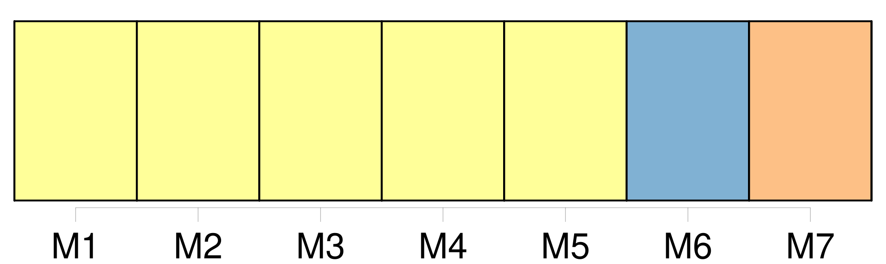
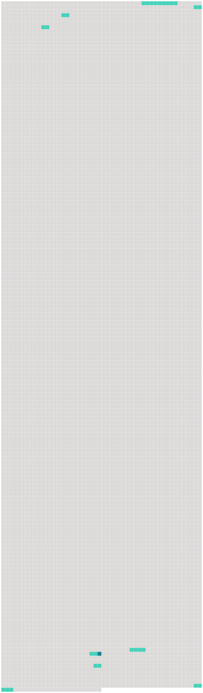

Longueur nb maillons : 9 mentions |
  |
Entre ces fenêtres, le crépi, tombé par écailles comme les squames d'une peau malade, mettait à nu des briques disjointes, des moellons effrités aux pernicieuses influences de la lune ; [la porte, encadrée d'un linteau de pierre] , dont les rugosités régulières indiquaient une ancienne ornementation émoussée par le temps et l'incurie, était surmontée d'un blason fruste que le plus habile héraut d'armes eût été impuissant à déchiffrer et dont les lambrequins se contournaient fantasquement, non sans de nombreuses solutions de continuité. Les vantaux de [la porte] offraient encore, vers le haut, quelques restes de peinture sang de bœuf et semblaient rougir de leur état de délabrement ; des clous à tête de diamant contenaient leurs ais fendillés et formaient des symétries interrompues çà et là. Un seul battant s'ouvrait et suffisait à la circulation des hôtes évidemment peu nombreux du castel, et contre le jambage de [la porte] s'appuyait une roue démantelée et tombant en javelle, dernier débris d'un carrosse défunt sous le règne précédent. [2 phrases] En poussant le vantail mobile de [la porte] , qui ne cédait pas sans protester et tournait avec une évidente mauvaise humeur sur ses gonds oxydés et criards, on se trouvait sous une espèce de voûte ogivale plus ancienne que le reste du logis, et divisée par quatre boudins de granit bleuâtre se rencontrant à leur point d'intersection à une pierre en saillie où se revoyaient, un peu moins dégradées, les armoiries sculptées à l'extérieur, trois cigognes d'or sur champ d'azur, ou quelque chose d'analogue, car l'ombre de la voûte ne permettait pas de les bien distinguer. [184 phrases]
Trois coups frappés assez violemment à [la porte du castel] retentirent à intervalles mesurés et firent gémir les échos des chambres vides. [1 phrases] Quel voyageur malavisé heurtait à [cette porte] [qui] ne s'était pas ouverte depuis si longtemps pour un hôte, non par manque de courtoisie de la part du maître, mais par l'absence de visiteurs?? [3 phrases] Il abaissa la barre de [la porte] , entr'ouvrit le battant mobile, et se trouva en face d'un personnage au nez duquel il porta sa lampe. [5 phrases]
Les saluts accomplis, le burlesque personnage, prévenant sur les lèvres du Baron la question qui allait en jaillir, prit la parole d'un ton légèrement emphatique et déclamatoire : |
 |
La ressource peut être téléchargée sur la page Ortolang
Si vous avez des questions ou vous voyez des erreurs, merci d'envoyer un mail à silvia.federzoni89@gmail.com
Site développé par S. Federzoni (contact)